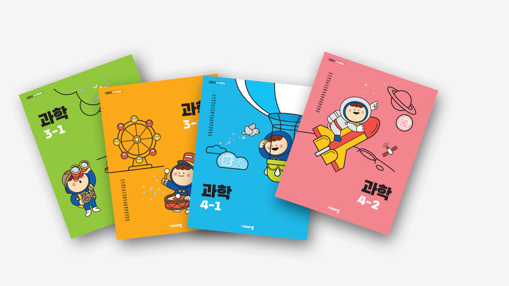

Projects로 돌아가기
교과서 개발
과학 교과서 개발
교육과정 기반 개념 위계를 설계하고, 학습 흐름 중심으로 교과서를 개발한 프로젝트
교과서 개발
물리학
교육과정
학습 설계

비상교육 과학 교과서 3~4학년 (2022 개정)
프로젝트 개요
- 고등: 물리학Ⅰ, 물리학Ⅱ, 통합과학, 과학탐구실험
- 초등: 과학 교과서 개발 (국정·검정)
핵심 기획
1. 개념 위계 기반 구조 설계
- 성취기준 및 단원 간 연결 구조 설계
- 개념 간 흐름이 끊기지 않도록 구성
2. 학습 흐름 설계
- 대단원: 흥미 → 활동 → 개념 → 적용
- 소단원: 동일 구조 반복 적용
3. 시각적 학습 경험 강화
- 복잡한 개념을 시각적으로 단순화
- 학습 몰입을 위한 편집 구조 설계
나의 역할
- 교과서 콘텐츠 기획 및 구조 설계
- 학습 흐름 설계
- 편집 방향 기획
핵심 역량
- 교육과정 해석 능력
- 개념 구조화 능력
- 학습 경험 설계